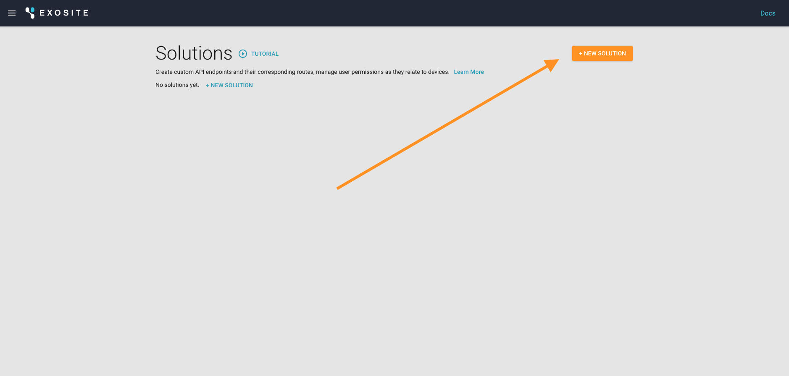
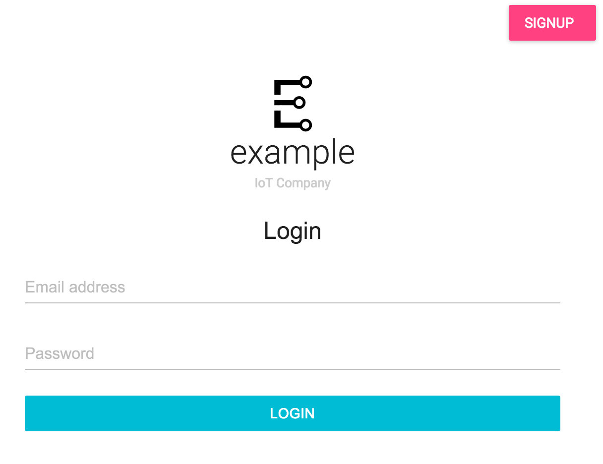
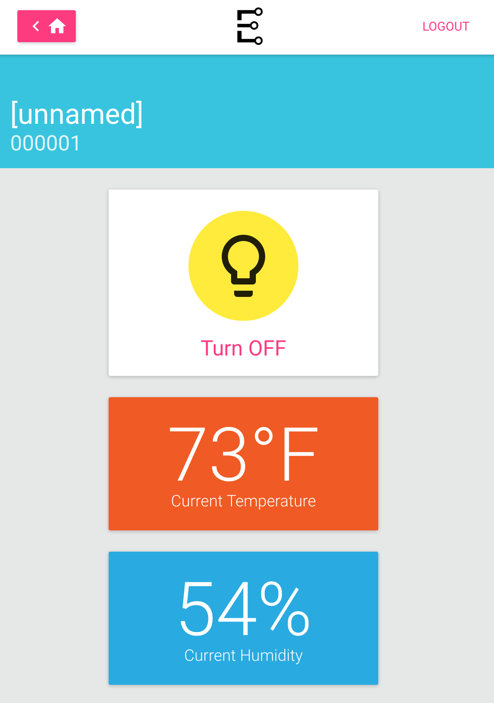
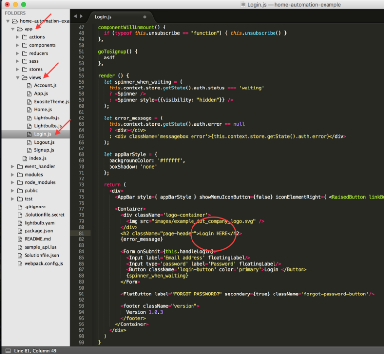
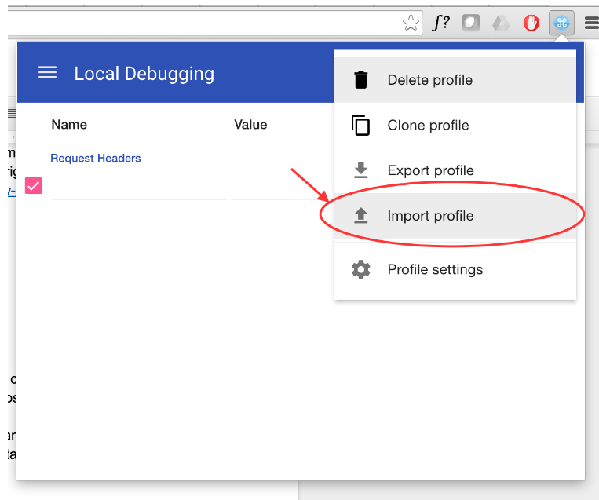
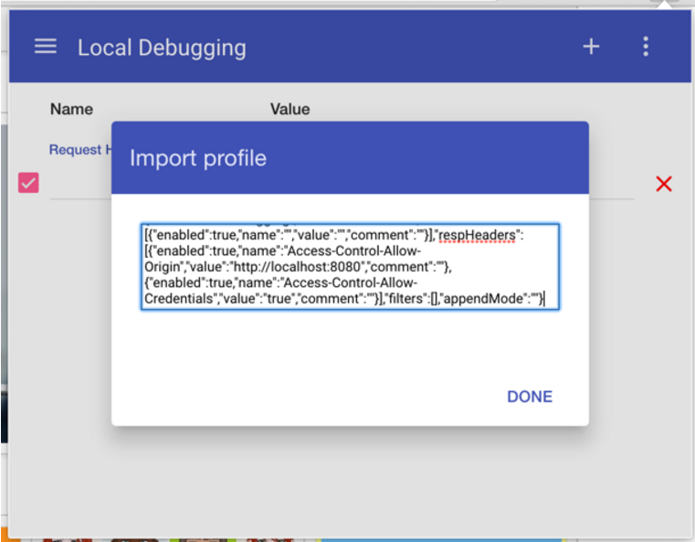

GETTING STARTED - CREATE A SOLUTION & DEPLOY CHANGES
This is a quick start guide to using Exosite Murano Solutions. When you are done following this guide, you will have built, deployed, and used an example IoT application with the following features:
- User Login
- User Profiles
- Device Provisioning
- Real Time Device Data
- Device Control
If you already have a Murano account, lets get started! If not Sign Up for Beta Access to Murano
STEP 1: CREATE A SOLUTION USING THE HOME AUTOMATION EXAMPLE
Create a solution - using the home automation example as a starting point - here: https://www.exosite.io/business/solutions
Note: You may have to delete your previous solution if you are on a free account.

Notice the Home Automation Example will pull in a public Github repository. Note: If you're using your own Github repository in the future, it will not be linked to your solution (e.g. push to your Github repository and see changes on your solution). It consumes the repository when creating the solution, and you can push changes using the Exosite CLI.

To verify the Template File worked, click the "Routes" menu item - you should see something like this:

Awesome! You created a custom API, owner and guest roles with device-level permissions, a responsive web app (which we'll make changes to later), and an empty user database.
STEP 2: LINK YOUR PRODUCT WITH YOUR SOLUTION
Note: If you haven’t created a product yet, create one here: https://exosite.io/business/products
You can plug in all kinds of services into your solution. Products are linked to your solution as a "service", similar to the way you can integrate Twilio. We'll continue to add services that you can plug in and save development time.
1) In your solution, click on the services tab
2) Select "Products"
3) Select the settings icon
4) Select the products you want to include in the solution
5) Hit "apply"

Your product is now linked to your solution - and can be added as a device.
STEP 2: SIGN UP FOR A NEW ACCOUNT ON THE WEB APP
Open your solution URL

Sign up for an account on your new example app.
If you used the Home Automation Example, it should look like this: 
After signing up, click on the email verification link, then login.
In the new web app, add a lightbulb using the Identity of the device you added earlier (e.g. if you simulated a device using a Python script, your device identity would most likely be 000001).
You should see data from the lightbulb - current humidity, temperature, and whether it's on or off. Note: If you simulated a device using the Python Script, keep the script running so data will continue to flow into the application. It should look like this: 
Congratulations, you've connected a device to your web app and are seeing live data.
ADVANCED: DEPLOY CHANGES TO THE EXAMPLE SOLUTION
NOTE: This is a technical tutorial. You’ll need some familiarity with your operating system’s terminal. In order to complete this tutorial, you will need git, node.js & npm, and python & pip installed on your system.
Clone this github repo:
git clone https://github.com/exosite/home-automation-example
CD to the directory
cd home-automation-example
Install the Exosite CLI
sudo pip install exosite
To confirm the Exosite CLI was installed correctly, type in:
exosite -h
If it returns “command not found”, you may need to install pip with brew on your specific OS. NOTE: There's a known issue in OS X - if you've upgraded to "El Capitan", you may need to go around the built-in system dependencies on “six” by running:
sudo pip install --upgrade exosite --ignore-installed six --ignore-installed prompt-toolkit --ignore-installed requests
Once you’ve confirmed the Exosite CLI was successfully installed, run the following 3 commands:
npm install
npm run compile
exosite --init
Login with your Exosite credentials, and enter your product and solution IDs (hint: try the typeahead)

Make a change to home-automation-example > app > components > Login.js. Change the text from “Login” to “Login HERE” to make sure changes are deployed. 
Then compile your code
npm run compile
And deploy your solution from the top level directory (you may need to cd back up to home-automation-example directory)
exosite --deploy
Open the URL (cmd/ctrl + click to open in default browser, or copy paste the link)

Voila! Your Changes have been deployed:

SETTING UP LOCAL DEVELOPMENT
To run the web application static assets locally, create a .env file in the root of the project with your solution URL, like this (name it anything):
API_BASE_URL=https://
NOTE: the Chrome plugin in the next step may change the appearance of certain websites (e.g. github.com) until you disable it. You can easily disable the plugin by going to Chrome > Preferences > Extensions > Disable ModHeader
Install this Google Chrome plugin and import this configuration:
{"title":"Local Debugging","hideComment":true,"headers":[{"enabled":true,"name":"","value":"","comment":""}],"respHeaders":[{"enabled":true,"name":"Access-Control-Allow-Origin","value":"http://localhost:8080","comment":""},{"enabled":true,"name":"Access-Control-Allow-Credentials","value":"true","comment":""}],"filters":[],"appendMode":""}


Then cd to the home-automation-example directory in terminal, and paste this command:
npm run start:dev
Go to http://localhost:8080 in your browser.
To push your solution changes to Exosite, simply run
npm run compile
Then deploy your solution changes to Exosite:
exosite --deploy
Sweet! You can now develop locally, compile your app, and push to the cloud.
Next up (if you haven’t already): CREATE A PRODUCT >>